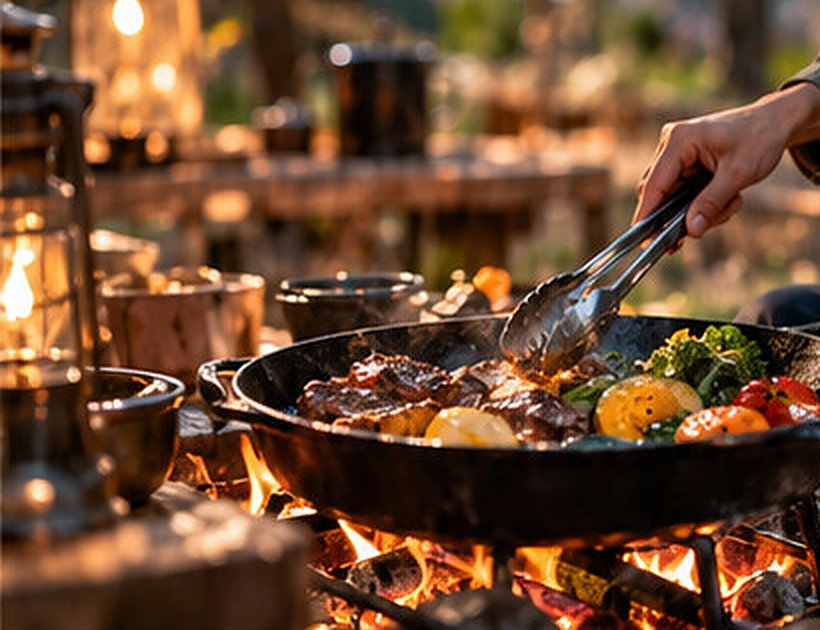
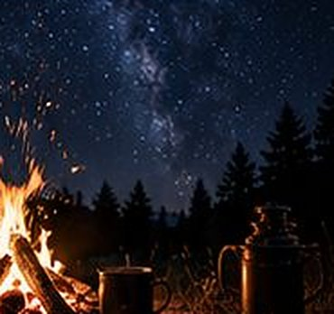
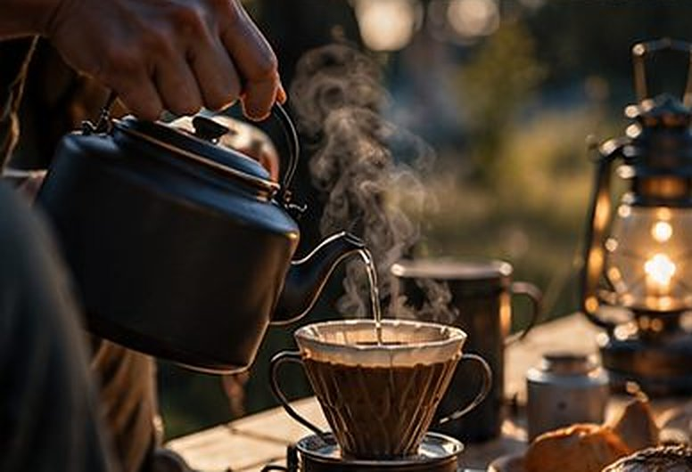

夕食は、
火のそばで。
食材と道具と薪は、サイトまで運びます。焼くのはお客さま、火の番はスタッフも手伝います。
かごひとつで、
夕食が届く。
17:15ごろ、食材のかごと鉄のフライパンをサイトまで運びます。
切る、下味をつける、といった面倒なところは厨房で済ませてあります。お客さまにお願いするのは、火にかけて、ひっくり返して、食べるところです。
焼き方は、かごに入っている手書きのカードを見てください。読まなくても、だいたい焼けます。
- 肉牛の赤身ステーキ、骨つきの鶏もも、太いソーセージ
- 野菜その日に地元の畑から届いたものを5種類ほど。秋はきのこが増えます
- 主食鍋で炊くごはん、またはあぶって食べるバゲット
- 汁もの野菜のスープ。鍋ごと火の端に置くだけ
- 甘いものバターをのせて包んだ焼きりんご


焼くまでの、
段取り。
夕食は17:30から。暗くなる前に火を育てておくと、あとが楽です。
- 火をおこす薪を井の字に組んで、着火剤に火をつけます。うまくつかなくても大丈夫。スタッフが近くで待機しています。
- おき火を待つ炎が落ち着いて、薪が赤くなるまで15分ほど。ここで焦ると、外が黒くて中が生になります。
- フライパンをのせる直径30センチの鉄のフライパンです。重いので両手で。取っ手は熱くなります。軍手をどうぞ。
- 焼いて、食べる肉は片面3分ずつが目安。焼けたものから食べるのが、いちばんおいしい食べ方です。
- りんごを埋める食べ終わるころ、包んだりんごを火の端に置きます。20分後、デザートになっています。
スタッフが手伝うこと
- 火おこし。はじめての方には、最初から一緒にやります。
- 火加減の見回り。18時と19時ごろに各サイトをまわります。
- 焦がしたときの相談。たいていは、削れば食べられます。
受付 9:00〜19:00。夜間は受付横の呼び鈴でスタッフにつながります。

朝は、
豆を挽くところから。
7:00から9:00のあいだに、朝食のかごを取りに来てください。受付の前に並べてあります。
コーヒーは手回しのミルで挽きます。ひとり分でだいたい百回まわします。眠気はここで覚めます。
- 飲みもの
- コーヒー豆とミル、ドリッパー。りんごジュース。お子さまには牛乳
- パン
- 地元のパン屋さんの丸パン。フライパンであたためます
- おかず
- 卵とベーコン。残り火か、カセットコンロで
- ほかに
- ヨーグルトと季節のジャム
朝は火をおこさなくても大丈夫です。かごにカセットコンロを入れてあります。
食べられないものが、
あるとき。
アレルギーや苦手な食材は、ご宿泊の3日前までにお知らせください。予約の申込票の「伝えておきたいこと」欄か、お電話で。
| ご要望 | できること | お伝えしておくこと |
|---|---|---|
| 食物アレルギー | 該当の食材を抜く、または別の食材に替えます | ほかの料理と同じ厨房で用意します。微量の混入までは防げません |
| 肉を食べない | 肉を、厚揚げ・きのこ・焼きチーズに替えます | スープのだしは野菜だけで取っています |
| 苦手な食材 | 3日前までなら、ほかの野菜に替えます | 当日のお申し出は、抜くだけになります |
| お子さま | 小学生は量を少なめに、ソーセージを多めに。幼児にはおにぎりと小さなハンバーグ | 2歳以下は、大人の分からの取り分けでお願いしています |
| お祝い | 焼きりんごに、ろうそくを立てます | ケーキのご用意はありません。持ち込みは冷蔵庫でお預かりします |
表は横に動かせます。
重いアレルギーをお持ちの方は、ご予約の前にお電話でご相談ください。食事なしのプランで、食材をお持ち込みいただくこともできます。
薪と、
火の決まり。
薪は1泊につき1束（およそ6キロ）を、宿泊料金に含めています。夕食を焼いて、そのあと2時間ほど眺められる量です。
足りなくなったら、受付で追加できます。よく乾いた広葉樹なので、火持ちがよく、煙は少なめです。
- 薪の追加
- 1束 800円（受付で、20:00まで）
- 焚きつけ
- 細割りの薪と着火剤は、何度でも無料
- 焚き火の時間
- 日没ごろから22:00まで
※ デモサイトのため、料金は架空のものです。
- 焚き火台の上だけで。地面で直接燃やすと、木の根と土の中の生きものが傷みます。
- 落ち葉や枝は拾って燃やさない。湿っていて、煙ばかり出ます。となりのサイトが泣きます。
- 22:00に火を落とす。水はかけず、残った薪は火消し壺へ。壺はスタッフが朝に回収します。
- 風の強い日は中止。判断はスタッフがします。そのときは、夕食を厨房で焼いてお持ちします。
- 花火はできません。手持ち花火もご遠慮ください。森が乾いている季節があるためです。
- お子さまのそばには大人を。焚き火台は、火が消えたあとも1時間は熱いままです。
雨の日は、
屋根の下で。
雨でも通常どおり営業します。キャビンは軒下、テントロッジはデッキのタープの下に焚き火台を移して、いつもどおり焼けます。
テントに当たる雨音は、思ったよりいい音です。これを目当てに、梅雨に来る方もいます。
- 小雨
- 軒下・タープの下で、ふだんどおり焚き火と夕食
- 本降り
- 共用棟の土間の食堂へ。薪ストーブのそばで、鉄のフライパンはそのまま使えます
- 雷・強風
- 焚き火は中止。夕食は厨房で焼いてお持ちします
- 台風など
- こちらの判断で営業をやめる日は、キャンセル料をいただきません。前日の17時までにご連絡します
チェックイン15:00から
チェックアウト10:00まで